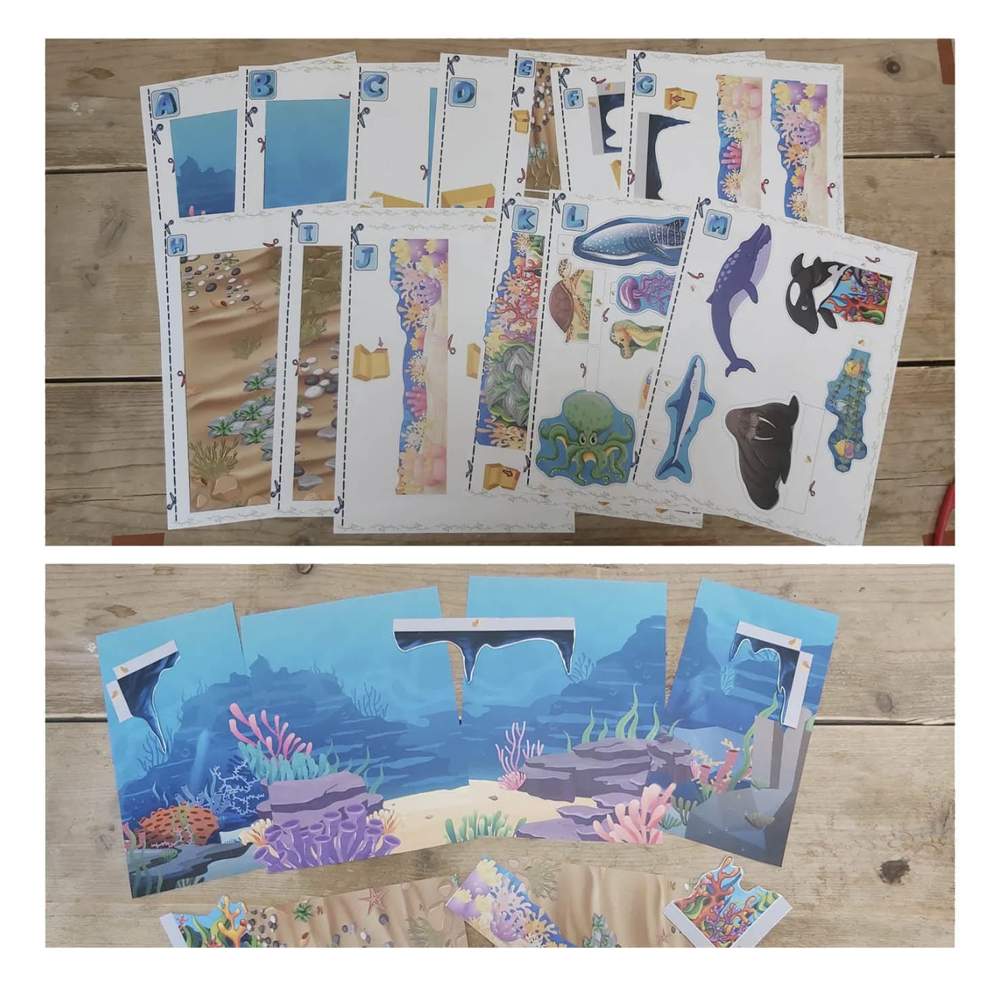
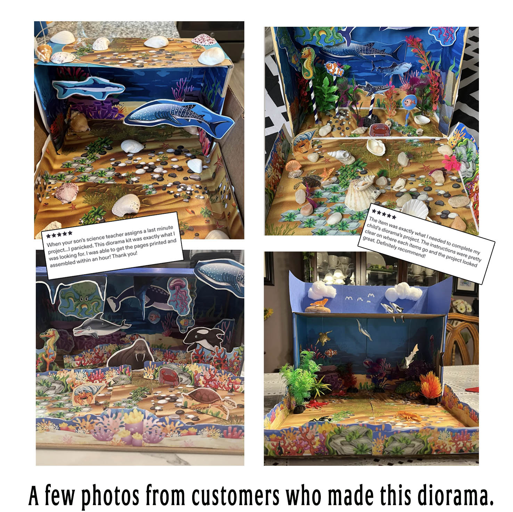

Ocean Habitat Diorama for Kids
Turn a simple box into a colorful underwater world. This printable ocean habitat project includes sea animals, coral, ocean scenery and 3D pieces students can cut out and arrange themselves.
A hands-on habitat diorama for science lessons, animal habitat assignments and creative school projects in the Philippines.
See the Project
Build a 3D Ocean Habitat
The printable pages provide the underwater background, ocean floor, coral scenery and individual animals. After printing, students cut out the pieces and build them into a three-dimensional ocean habitat display.
What You Print and Build
The project combines printable backgrounds with separate sea animals and scenery pieces, allowing students to build their own ocean habitat rather than simply filling in a worksheet.



Print, Cut, Build & Learn
The printable gives students a clear starting point while leaving plenty of room to arrange and personalize their own habitat model.
See How Other Families Made It Their Own
These finished examples show how families have added shells, stones, plants and other craft materials to make their ocean projects unique.

Printable Ocean Habitat PDF
This is a digital printable project. Secure checkout and instant download will be connected next.